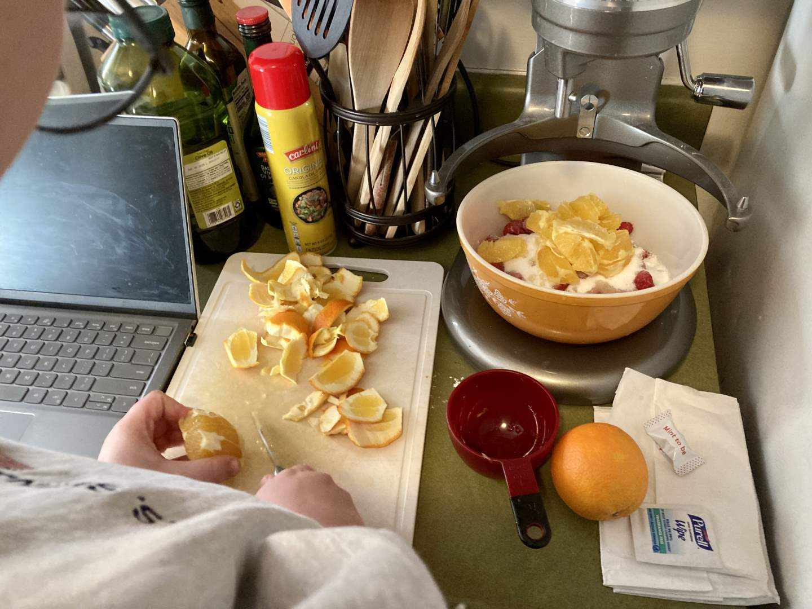
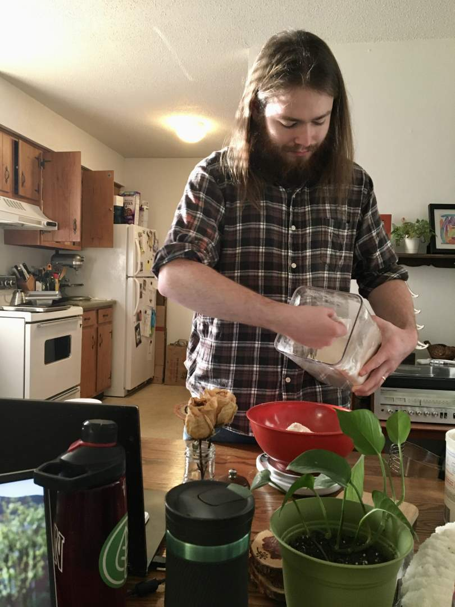
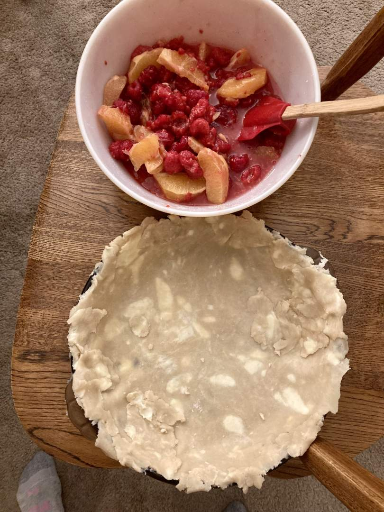
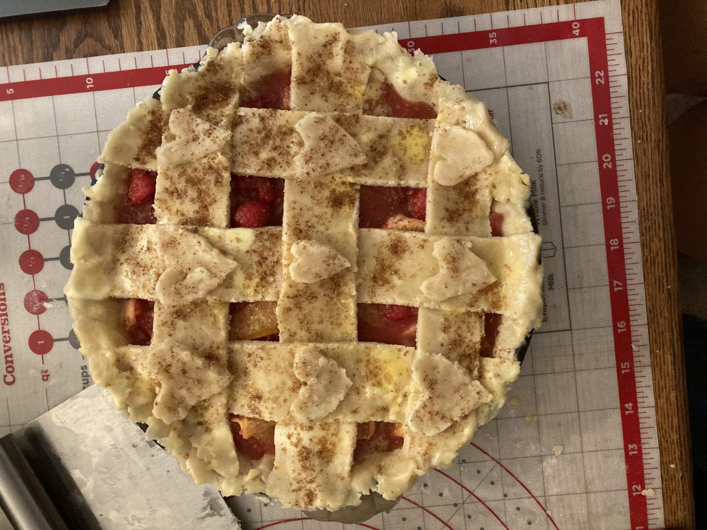
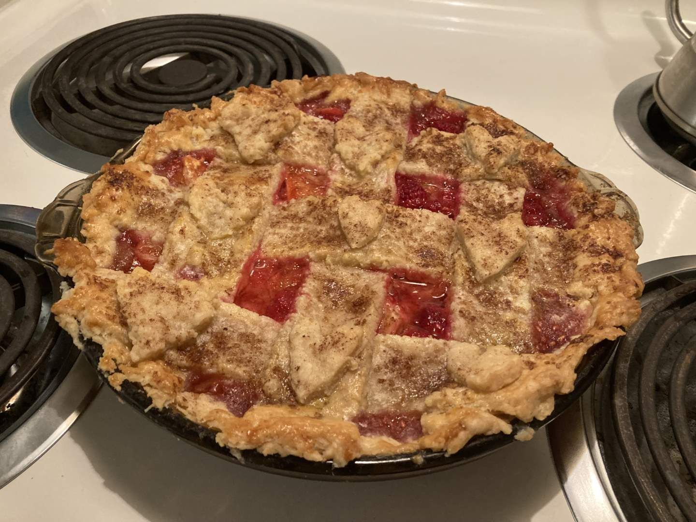

Pie 24: Raspberry Orange
2023-12-11Recipe is from Pie-Eyed Love.
Crust recipe from Tastes Better From Scratch.
Taste:
Difficulty:
Vibes:
Suggested pairings: just eat it for dinner
I love going to the grocery store. The combination of delicious food and tantalizing deals makes my heart race. When I go by myself and do not feel beholden to a grocery list, I often spend half an hour wandering around like a lost child in the produce section. I want fruit and vegetables with the best combined price per unit of measurement and quality I can find! When I saw raspberries on sale for a dollar a cup, my heart leapt with joy.
I imagined that a raspberry pie would not be hard to make, but the idea of making a single fruit pie was not very exciting. Luckily, we had some leftover oranges sitting in the citrus drawer of our fridge. Raspberry and orange seemed like a nice combination, so I turned to the Internet to make my pie dreams come true. Sure enough, someone else had conceived of this pie combo and shared their recipe with the world. It called for clementines, but I figured navel oranges would work if I added a bit more sugar.
The construction of this pie was straightforward. Ben prepared a fresh butter double-crust and I sliced three oranges into supremes. I used the juice of a few slices instead of lemon juice, preventing the waste of another citrus. The orange supremes were mixed with raspberries and coated with sugar, cornstarch, cinnamon, and ginger (my new favorite spice to add to tangy fruit pies). The result was a delightfully pink mixture that would likely make a yummy jam if cooked down. The color of the pie inspired me to add hearts to the lattice of the top crust to maximize the Valentine's Day vibes. After brushing the crust with egg and sprinkling cinnamon sugar over the top, we baked the pie for 40 minutes.
The recipe had warned that the pie needed up to four hours to cool, otherwise, the filling would not set. We waited as long as we could, which probably was not four full hours. Ben chilled the pie in the fridge, checking on it every hour or so to observe the moistness of the filling. After deeming the pie sufficiently cool, he cut into it, declaring “It’s a little soggy!”. And indeed it was. Filling the space where that pie slice so recently sat was a rose-colored lake of juice, which Ben poured into a bowl and sipped. Thankfully, the slices mostly held their shape after this excess syrup was removed.
The pie was delicious. After several weeks of making sweet pies that many have politely called “interesting,” it was very nice to enjoy a pie with delectability bona fides beyond question. Raspberry-orange is a great combination. The flavor reminded me of my grandmother’s chutney recipe, and I could see this pie being one I look forward to making every year around Christmas. The lattice and hearts also turned out well. The bottom of the pie had absorbed a lot of liquid and was not as crisp as some other pies. However, Ben and I both like dough to possess a little sog, so the texture was not off-putting to us. However, crisp-crust fanatics should be wary if trying this pie. Without additional thickeners, it is unlikely this pie could avoid soggy bottom development.
One aspect of pie-craft I am growing to love is the ease and profitability of combining fruits and vegetables with sugar and spices and then dumping the concoction into a buttery pastry dough dish. The pies are consistently better than the sum of their parts. While it can be hard to gather the energy to bake a pie, the results are more exciting than merely buying one from the store. The complexity of a recipe does not determine the goodness of a pie, so if all you can do is gather leftover fruits and a frozen pie crust, the result may still be fantastic!